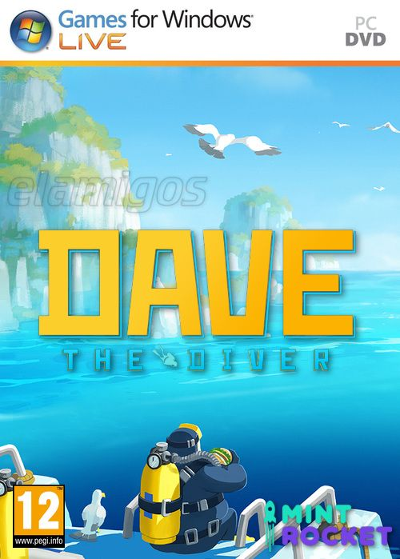

Dave the Diver 5.38 GB
Género: Gestión y Aventura
DAVE THE DIVER es un juego casual de rol y aventuras para un solo jugador
que incluye elementos de pesca y exploración del fondo marino durante el día
y de gestión de un restaurante de sushi durante la noche. Ayuda a Dave y a sus
extraños amigos a destapar los secretos de la región
.